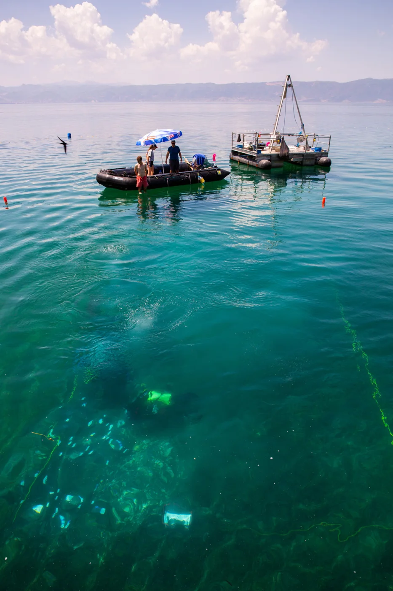
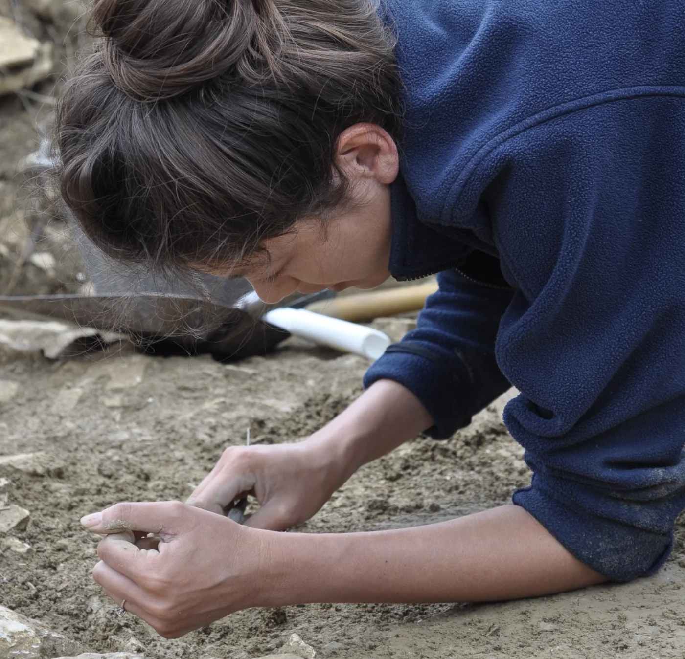

The Past is Present: Dr. Ariane Ballmer, Archaeologist

Dr. Ballmer in the Bibliothek Mittelstrasse. Bern. Photo by M. Jaquemet.
Dr. Ariane Ballmer may not be able to travel back in time, but through her work as an archaeologist at the University of Bern, she does the next best thing: bringing messages from the past to us. Dr. Ballmer explores the mysteries of pre-literate cultures. Currently, she works on an international research project called EXPLO (Exploring the dynamics and causes of prehistoric land use change in the cradle of European farming), granted by the European Research Council. This wetland archaeology and paleoecology research focuses on the early subsistence economy in the southern Balkans: Albania, northern Greece, and North Macedonia. She has also studied prehistoric sites throughout central Europe, particularly France and the Swiss Alps.
Dr. Ballmer compares her work to forensics. Like a crime scene investigator, she secures archaeological sites, identifying and recording evidence of past events. She finds specialists to analyze evidence and combines their results to reconstruct plausible situations, events, and processes of life in the distant past. “Understanding the past helps us to understand the present and the future,” on both local and macro scales, e.g., how Southern Balkan societies transitioned to agriculture and coped with environmental change.

The interdisciplinary EXPLO team extracts a sediment core (background) and excavates an underwater archaeological site (foreground) at Lake Ohrid, North Macedonia. Photo by M. Hostettler, EXPLO University of Bern.
Realities of long-ago time periods may seem remote. Dr. Ballmer maintains that “though lots of things have changed since 10,000 years ago, lots are still the same on a deep level. It is about surviving and growing, but also about identity, power claims, tenure, and further about understanding, self-expression and discovery.”
Dr. Ballmer finds fulfillment in the “material-based and technical approach” of prehistoric archaeology. In the absence of written records, she relies solely on material evidence to learn about the past. She specializes in the Neolithic Period (5500-2200 BC in central Europe; ca. 7000-4000 BC in the Balkans); the Bronze Age (2200-800 BC in central Europe); and the Early Iron Age (800-450 BC). The more recent, “the closer you get to [year] zero, the more obvious and richer the material source situation tends to be, eventually including written sources.”

Dr. Ballmer recovering archaeological remains at the Iron Age site of Mont Lassois in Burgundy, France. Photo by K. Schäppi.
Extrapolating from material evidence—sediment layers, building structures, burials, receptacles, tools, ornaments, weapons, art, even food waste—to the prehistoric world view can be quite a leap: “the further one enters the imaginary world of our ancestors, the more tentative the conclusions.” How does Dr. Ballmer address this in her work on ritual topography, mythical geography, and spatial memory? Her particular focus is the “strong tie between ritual behavior and unaltered natural landscape,” as evidenced in the Bronze Age.
According to her research, ritual practices took place in distinctive locations—wetlands, passes, valley junctions. Prehistoric people may have considered these liminal places transitions between realms, seeking them out to make rituals more effective. “We lack a lot of concrete evidence [about] their imaginary world,” she allows, but “the relationship between traces of ritual practice and topographical features seems given and asks to be interpreted.” In her opinion, making plausible statements about abstract aspects of life in the past is an exciting challenge and a creative dimension of the profession.
Dr. Ballmer’s path through science reflects her independent streak. Originally from Schaffhausen, she studied in Geneva and Basel before moving to Zurich for her Ph.D. Afterwards, she was a postdoc fellow in Paris, Bern, and Heidelberg. Unlike many of her colleagues, she did not grow up knowing she wanted to be an archaeologist. “Interested in everything,” she could see herself becoming a forester, journalist, or surgeon. After graduating from high school, she flipped through a thick study guide. Archaeology piqued her curiosity, although she had “no prior experience or connection to it.” Always up for a challenge, she committed to it and found herself “hooked from the first day and passionate about it.”
Ever one to chart her own course, Dr. Ballmer sought out mentors beyond those assigned to her. Now, as a lecturer, she hopes to transmit what helped her. She strives to be a good role model and foster a positive environment. “Competition can be stimulating,” she says, but “it’s like in sports: fair play is everything.” “It’s easy to get frustrated in the course of an academic career” but “it’s also easy to find excitement and fulfillment in research, one should never lose that.” She advises her students and mentees to be consistent and patient, and of course “to get advice, but still follow your own path.”
In terms of techniques, Dr. Ballmer reassures aspiring archaeologists that they will learn specialized skills during their university studies, both in the classroom and in the field. These include excavation techniques, surveying, and documentation, as well as computational skills such as GIS, image processing, and statistics. Students should bring curiosity and have endurance, “not giving up, but trying 200 times until breaking through.”
Coordinating international fieldwork requires persistence. Along with the principal investigator of the EXPLO project, Dr. Ballmer brings stakeholders from different backgrounds together, negotiating various research and heritage management traditions. She is not “alone in nature digging quietly” but often “on the move, in active exchange, making decisions.” Though challenging, “making things work in a complex scheme is absolutely rewarding.” When everything is coordinated coherently, “all the players are able to perform smoothly and in the most effective way – an ideal basis for excellent research.”
Dr. Ballmer sounds a positive note regarding gender issues in archaeology. “It’s relatively easy to draw attention to women’s issues” because prehistoric evidence is inherently non-discriminatory: “there are lots of women in the past, too.” Highlighting the “diversity of prehistoric societies is a chance for not only women, but also men in archaeology to reflect on these issues in our daily lives.”
Studying prehistory can help us understand the present and improve the future. Dr. Ballmer predicts that archaeology will continue to address ethical issues related to social inequality, native community frameworks, and material and data exploitation. The self-referential context of academia will open up, and discipline-specific values will be re-assessed. Archaeology will need to “increase engagement on eye level” to prove its relevance to society.
Dr. Ballmer can contribute ever more to broadening archaeology as she nears her goal of becoming a professor. Whether diving into a new course of study or leading a team, she thrives on challenge and the unknown. “As long as there are things to discover,” she says, “I don’t mind where—you never know what they’ll be.”
*Thank you to Dr. Ariane Ballmer for sharing her story with 500WS Bern-Fribourg. Click here to find out more about her experience.
Gabrielle Vance
M.Sc. Geology
From the 500 Women Scientists Bern-Fribourg archive. Originally published 23 November 2020.
Explore more stories